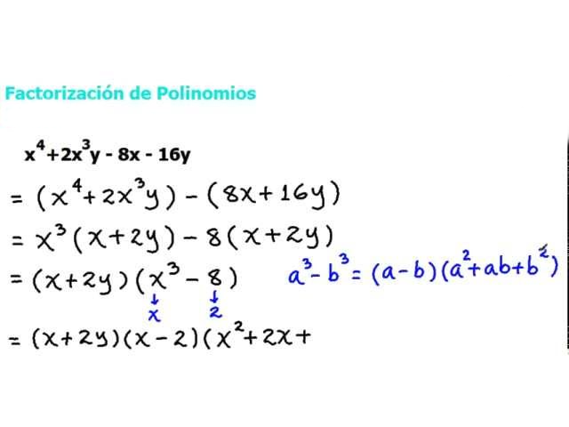

Polinomios
Historia
Tipos
Resolución
Importancia
Operaciones
Resolución de polinomios
Resolver un polinomio significa encontrar los valores de x que hacen que el polinomio sea igual a 0.
Existen 3 metodos principales:
Formula resolvente (solo aplicable en formulas cuadraticas)
Factorización
